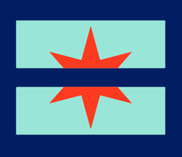

Content Design
Legal Aid Chicago
Translating dense legal info into a digestible flyer during COVID-19.
Translating dense legal info into a digestible flyer during COVID-19.

Completed June 2020 with Legal Aid Chicago, they provide low-cost legal representation to Cook County.
Their loan flyer was dense and overwhelming for a stressed audience.
A concise, digestible infographic that clearly communicated only what mattered most.
Designer
Solo effort, with input from 3 attorneys at Legal Aid
Led stakeholder interviews, weekly design workshops, and the full redesign.
Legal Aid Chicago provides free to low cost representation in civil legal matters for Cook County residents who can't afford an attorney. Their mission is to dismantle the legal barriers that perpetuate poverty and inequality, working toward a system that's open and equally effective for everyone, especially those who face unfair or disproportionate treatment.
As COVID drove a surge in unemployment, people grew increasingly anxious about basics like paying their student loans. Legal Aid Chicago's existing flyer had all the right information, but it was packed with dense text that was overwhelming to actually read and act on. I took this on to redesign the flyer and work directly with three attorneys from Legal Aid Chicago to figure out what needed to stay front and center versus what could live online instead.
I interviewed three attorneys at Legal Aid to understand what they felt was essential to communicate clearly. The team also shared previous flyers as reference for their existing style and branding. From there, I took a top-down approach: breaking the flyer apart section by section to identify what each one was really trying to say, then ran weekly design workshops throughout the month to walk through each iteration and stay aligned on direction.
In the stakeholder interviews, I focused on surfacing what mattered most to communicate in a cleaner form, stripped of the heavy legal text. The questions that shaped the redesign: (1) Is this something someone can act on while they wait?; (2) What can be done right now about forbearance?; (3) Are loans automatically paused because of COVID, or does someone need to take action?
Each week, I brought the latest iteration back for feedback, and came out of each session with clear next steps: moving from a flow diagram to a more informative layout, splitting the flyer into federal versus private loans, and reordering content from most to least important.
The final flyer was significantly more digestible and concise than what Legal Aid Chicago started with. People that came in or reached out to them can receive this as a starting point and can go to their website for more information.
I built the final design in Google Slides so Legal Aid could edit and update it themselves going forward, without needing a designer for every future revision.
{kind=link}
{kind=link}
{kind=link}
{kind=link}